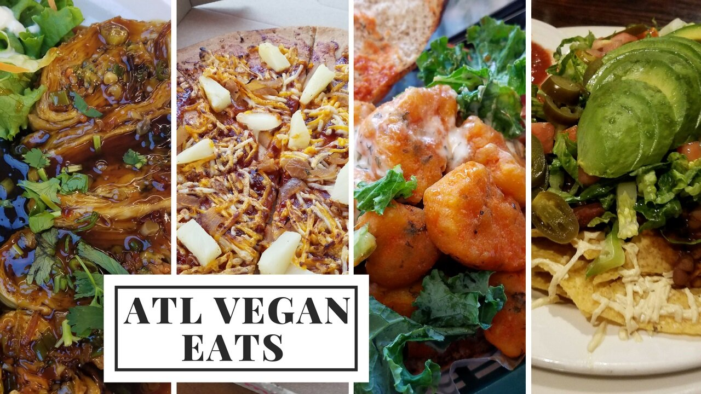

Vegan Food in Atlanta

I had a friend visit Atlanta for the first time this weekend, so of course the weekend was full of yummy vegan food in Atlanta and good times! We went to so many places and drove around a lotttttt. I wasn't too tired during it...but the Monday after...my fibromyalgia hit me. It got pretty concerning, and I've been mildly shaking in the evenings from sheer exhaustion. So I'm trying to keep this week low-stress and easy movement to recover. Times like this remind me that I still do have fibromyalgia and have to keep it in mind when trying to do a lot of things at once. :( I'm just glad I'm as well off as I am and can recover pretty well now that I know how to manage it!
It was fun having a food buddie for the weekend! There's so many new restaurants for vegan food in Atlanta that I've been wanting to try, but I can't bring myself to eat out without some sort of occasion. It's not the fact that I'm alone - I have no issue eating alone. It's just that I can't justify spending the money and eating large portions without some sort of event to celebrate. So it was nice to have a reason and a friend to go with. :) I think I found a new favorite in the process!! Read below to find out the best! Or you can watch the youtube video to actually see clips of the delicious food.
Things we did:
-
Georgia Aquarium! It's been years since I've been.
-
Centennial Olympic Park
-
Piedmont Park
-
Georgia Tech Football game
-
FOOOOOOD
Places we ate:
-
VIVA LA VEGAN - I think this is my new favorite!! Wowww it was a food coma. There were about 4-5 more things I need to go back to try. It's traditional American food like sandwiches and fries which I usually don't go for, but it was just so killer and comfort food at its finest.
-
HERBAN FIX - I've been here before and it's wholesome, nutritious food on the high end fancy scale. It's Asian fusion cuisine, my fave.
-
LOVING HUT (in Norcross) - whole, nutritious food. They have an Asian section and a western section. They really believe in healing with food and eating whole foods. I left feeling so fresh. I want to go back to try a couple of other things.
-
NAK WON SWEET RICE CAFE - not a "vegan" place but it's Korean sweet rice cakes mainly, and I've been here a million times. The rice cakes are all vegan by nature except the honey filled one, which is labeled. P N Rice Cake House is better in quality, but less variety.
Vegan restaurants I've been to and recommend:
-
HARMONY VEGETARIAN (chinese, my favorite place for the longest time. been countless times and always a hit)
-
GO VEGETARIAN (southern comfort, current favorite)
-
CHELSEA'S BAKERY (caribbean bakery, the food section looks just okay)
-
CAFE SUNFLOWER (all cuisines to choose from, stupid high prices but it's good, wholesome food)
-
CINNAHOLIC (customizable cinnamon rolls)
-
GREEN SPROUT (also chinese, but not as good as Harmony)
Vegan restaurants I want to try:
-
HEALTHFULL ESSENCE (caribbean)
-
GO VINDA'S CAFE (american, cuisine mix)
Vegan restaurants I don't recommend:
-
SOUL VEGETARIAN (southern comfort, the food was all flavored awfully and nothing was a hit, all misses + bad service when I was the only person in the place)